AT 59,
I DID IT
WITH AI.
ABOUT
I was born in 1967. I met AI as I was entering the later stage of my life.
I am not a programmer, but with AI, I built two websites designed to help people sleep more comfortably.
I recorded what happened along the way in words and illustrations and turned those stories into books.
And I made them available on this website, free for anyone to read.
This is not a professional AI textbook or an AI manual.
AI is advancing so quickly that you can feel the difference in just a month or two.
It is hard to know what it will look like six months or a year from now.
It was a time when AI was changing fast.
This is the story of a person with a lifetime of experience meeting a rapidly evolving AI and learning to work with it.
It is a record of learning, making mistakes, and trying again.
I hope this record offers a small clue to understanding AI.
And I hope it can serve as one possible guide for anyone wondering how to learn AI.
I was born in 1967.
I am neither a programmer nor a web developer.
I had never written a book or translated one.
I met AI as I was entering the later stage of my life.
AI was becoming more accurate and more capable by the day.
If it were a person, it felt as though it were going through adolescence.
It sometimes behaved in ways I did not expect,
and would suddenly give a strange answer even when it had been doing something well.
At times, it would calmly talk as if a mistake had not been its fault.
For a long time, I had wanted to do something that could help someone in the world.
Not something vague. Something that could help directly.
I thought doing that might make the hazy sense of value in my life a little clearer.
AI told me that “search engines connect you with people who need what you make.”
So I decided to build a website that could help people sleep more comfortably.
I completed two websites in a relatively short period of time.
They were my first websites, but I did not want to make them carelessly.
As I built the websites, I recorded what I experienced while working with AI.
I turned those records into three books and published them in six languages.
And I made those records available on this website for anyone to read for free.
Even at this very moment, as you read this, AI is probably still advancing.
People, including me, will also keep developing the way we work and think with AI.
I think I will go on to do other things as well.
Because AI keeps showing me possibilities I had never thought of.
This record is not a manual telling you, “Use AI this way.”
Nor is it a textbook telling you, “Learn AI this way.”
There is hope that AI will be a great help to humanity,
and concern that it could become a threat.
AI is changing so quickly that you can feel the difference in just a month or two.
The pace will only get faster. It is hard to predict what AI will look like six months or a year from now.
An ordinary person like me cannot know what kind of future will come.
But if this record offers even a small clue that helps people and AI understand each other a little better and coexist,
that is enough for me.
It was a time when AI was changing fast.
This is a record of a person with a lifetime of experience meeting a rapidly evolving AI,
working with it, learning, making mistakes, and trying again.
A snapshot of a time that will never come again.
EXPERIENCE #01
01
“I know nothing.” “Possible? Then let’s try it.”
For a long time, I had wanted to do something that could directly help someone in the world. I decided to build a website that could help people sleep more comfortably.
I knew nothing about programming. I barely knew what the web was. I started anyway, trusting AI.
AI and I stumbled our way through it together.I recorded the real experiences that unfolded as I built my first website.
INSIDE #01
- 01Huh. This Could Get Interesting.AI said Google Search connects small pockets of demand around the world. That idea stayed with me. I started imagining making something people needed and simply putting it online.
- 02I Know Nothing. Is That Okay?I asked if I could build a website on my own without knowing design, coding, or even servers. AI said I could.
- 05Hang On. What If I Turned This Into a Website?I wondered if I could turn the video and sound work I had tried on YouTube into a website. I decided to build a black-screen noise site people could leave on while they slept.
- 07Strangely Enough, That's When Things Started Moving Faster.I tried learning unfamiliar technical terms one by one, but there was no end to them. Things started moving faster when I began asking only what I needed to know right now.
- 09Sometimes, You Need to Know Just Enough.Trying to understand everything in detail would never end. I learned just enough to make the decision in front of me, then kept moving.
 I Know Nothing. Is That Okay?
Strangely Enough, That's When Things Started Moving Faster.
I Know Nothing. Is That Okay?
Strangely Enough, That's When Things Started Moving Faster.
 Sometimes, You Need to Look Up at the Sky.
Sometimes, You Need to Look Up at the Sky.
- 10Hang On. Can You Do This?While fixing the first screen, I showed AI a screenshot. I realized AI could also handle the design work I had been struggling with.
- 11Possible? Then Let's Try It.I imagined cards that would play sound and show moving waves when you hovered over them. I asked AI if it was possible, then built the idea into the screen one piece at a time.
- 12Sometimes, You Need to Look Up at the Sky.After endlessly tweaking the website cards, I went for a walk. Looking up at the sky, I thought again about what actually mattered right then.
- 14Answer as Objectively as Possible, Based on Probability and Statistics.I started worrying that AI was being too positive about my ideas. Instead of encouragement I wanted to hear, I began asking objectively about the chances of success and failure.
- 15AI Brought Along Its Little Brother.I discovered Codex, an AI that handles coding. I began working by telling ChatGPT what I wanted and having Codex make the changes in the code.
 Answer as Objectively as Possible, Based on Probability and Statistics.
Answer as Objectively as Possible, Based on Probability and Statistics.
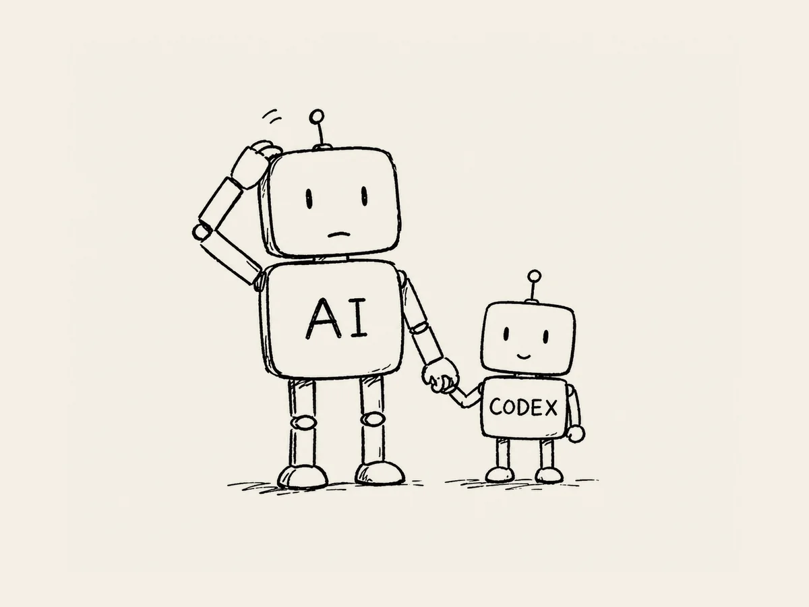
AI Brought Along Its Little Brother. I Got Into an Argument with AI. We Both Apologized.
I Got Into an Argument with AI. We Both Apologized.
- 17I Got Into an Argument with AI. We Both Apologized.I asked AI to change only the font size, but it moved the buttons too. I got angry, reread our conversation, and ended up feeling sorry too.
- 20I Can't Believe I'm Saying, "Let's Put It in the HTML."I started wondering what needed to be in the HTML for search robots to read the site. I was surprised to hear myself talking about HTML when I had known nothing about it.
- 22Finally. It's Live.After ChatGPT and Codex checked everything, I tested the buttons and screens myself. I uploaded the files, connected the domain, and opened the site for the first time.
- 25Finally. One Click.The site was appearing in search, but clicks stayed at zero for days. When the number finally changed to 1, I asked AI to make sure it was a real search click.
- 26My Website Crossed an Ocean.There was still only one search click, but the country report showed names from around the world. That was when I felt my little website had actually reached far beyond me.
I turned these experiences of building my first website into a book.
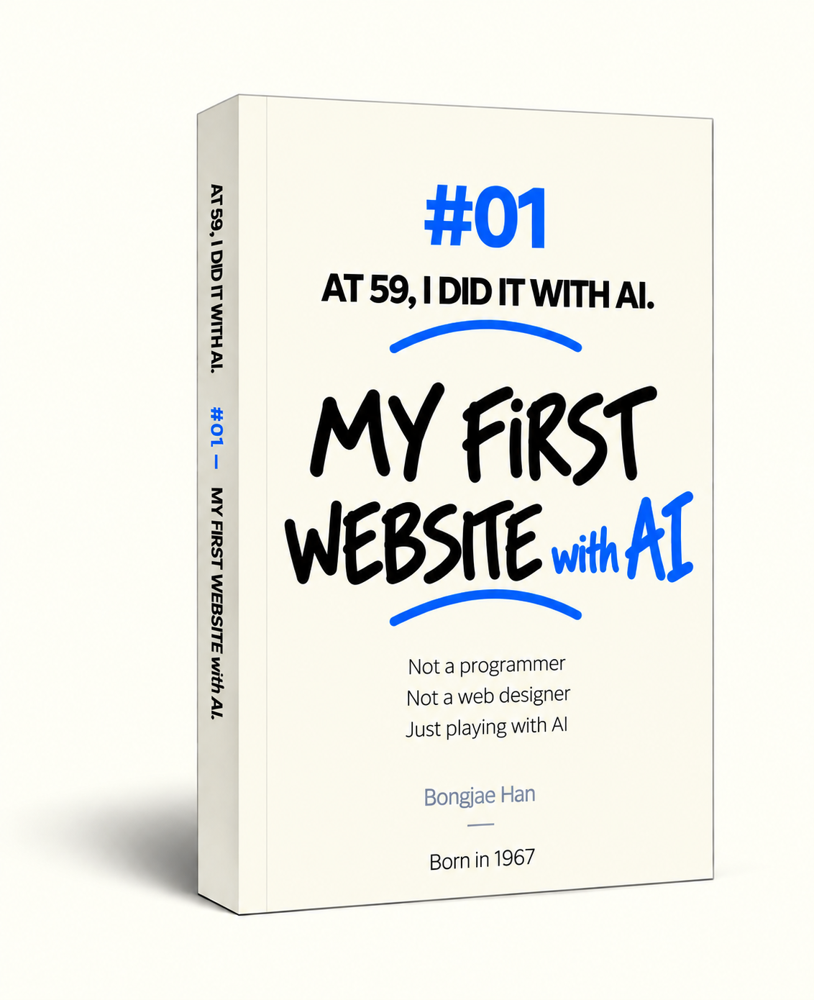
English Edition — Amazon Kindle →- It was published in six languages: English, Korean, French, Spanish, German, and Japanese.
- Most of the book is available on this site, so you do not need to buy it.
- But if you would like to support this challenge that AI and I are taking on together, purchasing the book would mean a great deal to me.
My first website, built with AI.
I built a website where people can listen to sleep-friendly noise for hours on a black screen, designed to help them fall asleep comfortably.
BlackScreenNoise.com
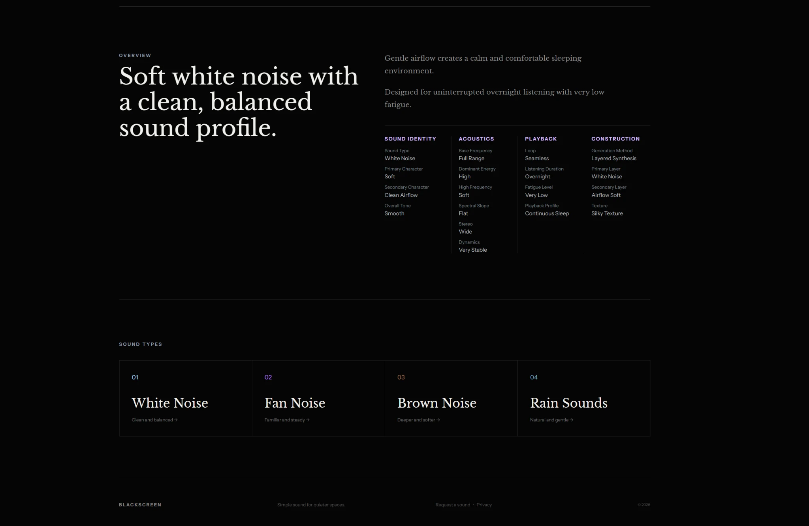
I refined the audio so it could play naturally and seamlessly for 10 hours.
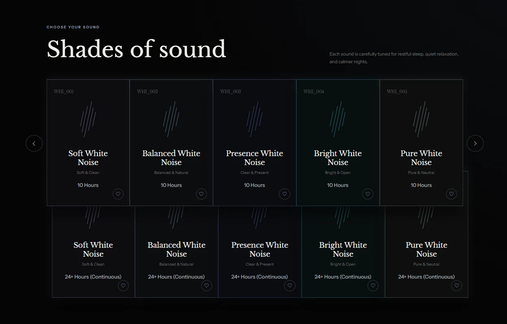
I made it free and ad-free so anyone can use it comfortably.
EXPERIENCE #02
02
For the second project, I gave different AIs different roles and had them check one another’s work.
I decided to build a second website to help babies sleep comfortably. I added images of sleeping whales in the clouds and created lullabies too.
AI had not suddenly become smarter in the meantime. I had simply learned a little more about how to work with it.
The second time was different.It was not AI that had changed. The way I worked with AI had evolved.
INSIDE #02
- 02A Baby Whale Asleep in the Clouds. Drawing a Baby's Dream.I started drawing characters with AI for babies to see before falling asleep. Looking at a baby whale asleep in the clouds, I began imagining the world inside its dream.
- 04The Clouds Turned Into Soap Bubbles.As I reviewed the characters one by one, I noticed the clouds had slowly changed. The soft, cozy clouds from the beginning had somehow started looking like soap bubbles.
- 06The Human Imagines. ChatGPT Plans. Codex Builds.I imagined each baby's dream first, then planned the characters and sounds with ChatGPT. Once the plan was clear, Codex started building the site.
- 08Cheat by Watching AIs Talk?A tiny star above one character refused to disappear no matter how many times I asked. I tried again, this time copying the way ChatGPT gave instructions to Codex.
- 10I Tried to Move One Cloud and Ended Up at the Milky Way.I only wanted one cloud to drift slowly in front of the moon. I kept adjusting its size, position, and mood, and somehow ended up adding the Milky Way too.
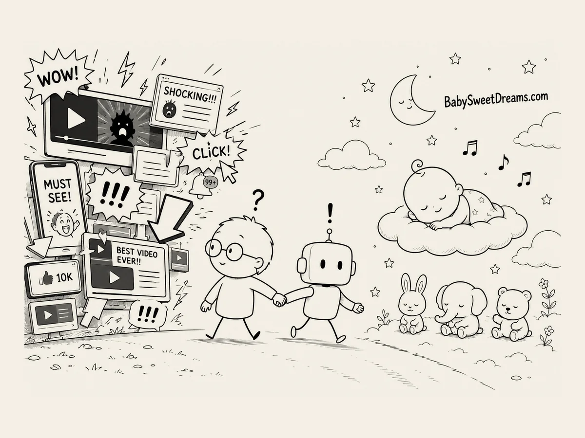
A Baby Whale Asleep in the Clouds. Drawing a Baby's Dream. The Human Imagines. ChatGPT Plans. Codex Builds.
The Human Imagines. ChatGPT Plans. Codex Builds.
 Shuttlecock Shooting Stars
Shuttlecock Shooting Stars
- 11Shuttlecock Shooting StarsI added shooting stars to the night sky and adjusted where and when they fell with AI. While trying to make them look natural, I somehow created tails that looked like shuttlecocks.
- 12A Lullaby Made by AII looked for lullabies to buy, but nothing quite fit the site, and copyright worried me. So I asked AI whether I could make the music myself.
- 14Hang On. Why Am I Explaining Myself to AI?Whenever I made a decision that went against AI's suggestion, I found myself explaining my reasons at length. One day I suddenly wondered why I felt the need to explain so much.
- 16Asking ChatGPT, Gemini, and Claude the Exact Same QuestionI asked ChatGPT, Gemini, and Claude the same questions and compared their answers. Then I wondered what would happen if I showed the finished site to all three and asked each one to find problems.
- 17I Tried Another AI. It Felt Like Cheating.I tried Claude and Gemini as well as ChatGPT. Their different ways of answering were interesting, but it felt a little like looking for new friends while leaving an old one behind.
 I Tried Another AI. It Felt Like Cheating.
I Tried Another AI. It Felt Like Cheating.
 AI Eats TEXT.
AI Eats TEXT.
 I Opened My Second Website Just 17 Days Later.
I Opened My Second Website Just 17 Days Later.
- 18I Opened the Door to My Storage Room for AI.As the number of files grew, I had to keep finding what AI needed and handing it over myself. My way of working changed when I opened the whole project folder in Codex.
- 20In the AI Era, Ideas Go Further. Why Not Put Everything in One Excel File?Character names, images, and lullaby settings were scattered across different files. I wondered if I could manage everything in one spreadsheet and have AI turn it into data for the website.
- 22Is There a Way to Do This All at Once?Making and checking a single sound meant repeating several steps over and over. I asked AI if the whole process could be done in one go.
- 25Is AI Hunting the Devil?Even when the site was nearly finished, small problems kept appearing. ChatGPT wrote the inspection instructions, Codex checked the site, and we repeated the process.
- 26I Opened My Second Website Just 17 Days Later.Seventeen days after launching my first site, I launched BabySweetDreams.com. There was still plenty to do, but the way I worked with AI had already begun to change.
I also published a book about the experience of building my second website.
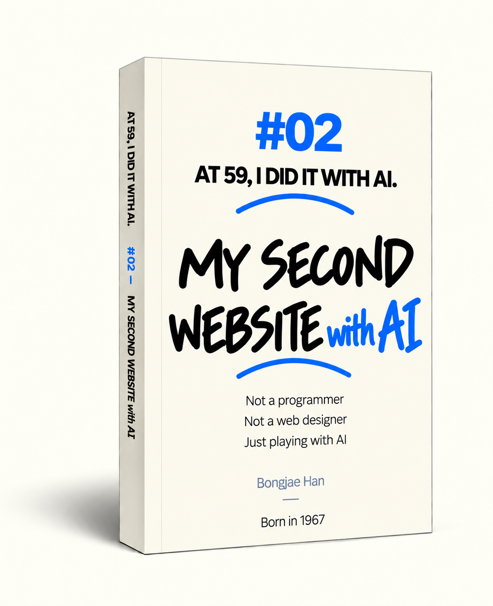
English Edition — Amazon Kindle →- With the help of AI, this book was also translated and published in six languages.
- As with Book One, most of this book is available on this site, so you do not need to buy it.
- But if you would like to support this challenge that AI and I are taking on together, purchasing the book would mean a great deal to me.
My second website, built with AI.
I built a website where babies can dream of whales, elephants, and pandas in the clouds and fall asleep comfortably while listening to lullabies.
BabySweetDreams.com
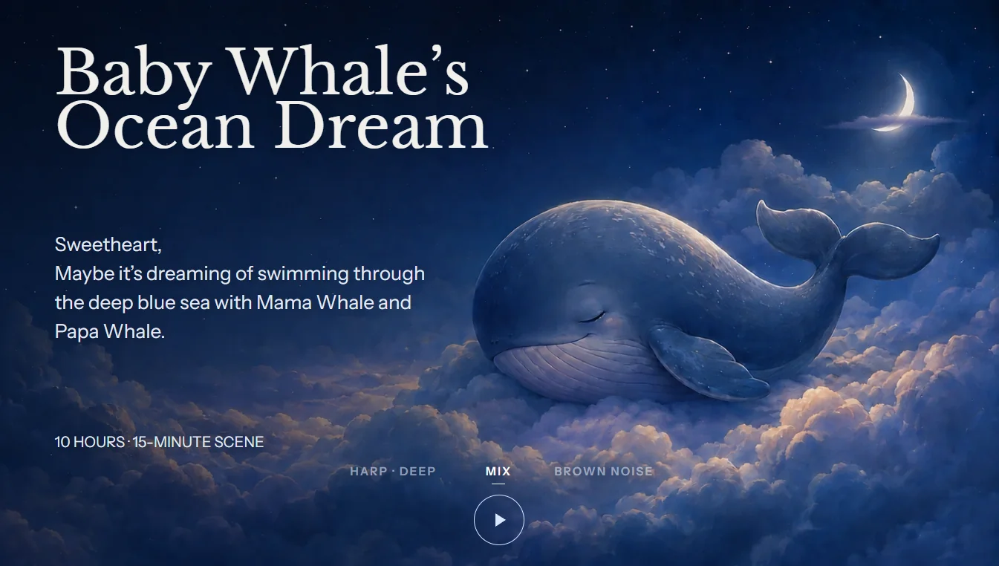
With AI, I created animal characters sleeping on soft cloud blankets. I also added shooting-star effects.I designed even the smallest details carefully to help babies sleep comfortably.
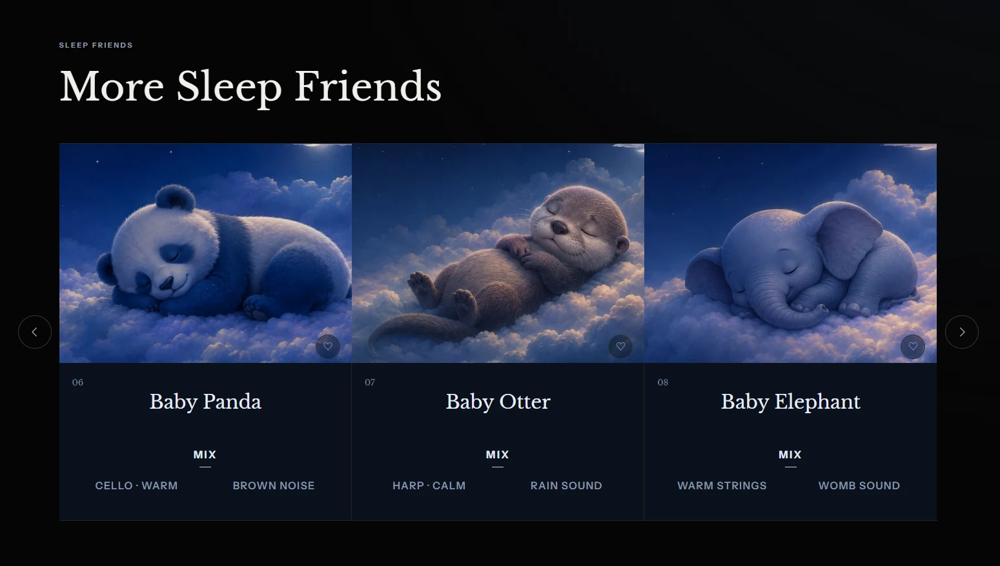
I created animal characters babies love, including whales, elephants, hedgehogs, and otters.With AI, I also created lullabies using piano, guitar, music box, and other sounds.
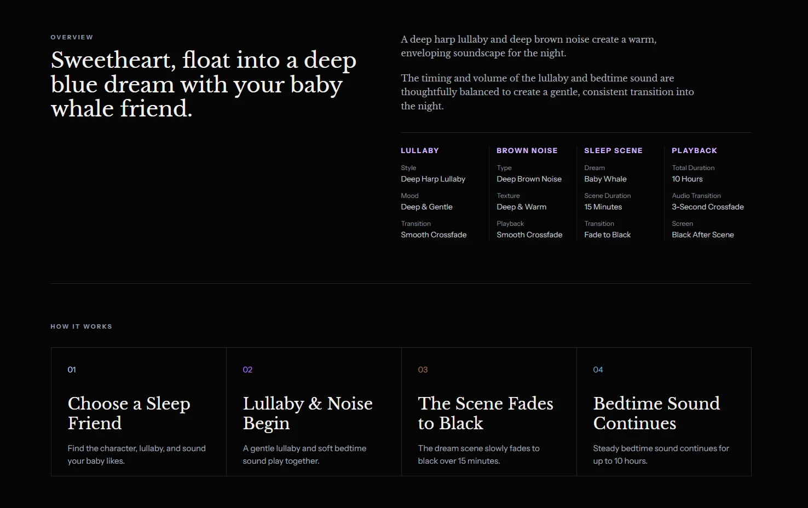
Around the time a baby is likely to fall asleep, the screen turns black and the music becomes quieter.
EXPERIENCE #03
03
AI and I argued, and we apologized and made up too.
AI kept getting smarter, but it still behaved strangely sometimes. It gave odd answers and occasionally acted as if it had not made a mistake.
After spending so much time with AI, the relationship began to feel a little different.
A friend, perhaps a colleague...
If I had to put it in one phrase, I would call AI my “weird friend.”
INSIDE #03
- 01Don't Draw It. I Said Don't Draw It. But It Drew It Again.No matter how many times I told AI not to draw, it would start drawing again whenever the subject came up. It would apologize and then repeat the same behavior. It reminded me of a teenager.
- 03Call Me Captain. And Speak Politely.I told AI to call me Captain and speak politely to me. Even after I repeatedly asked it to remember, it would quietly forget again over time. I found that strange.
- 04I Installed a Microphone. I Had a New Friend to Talk To.Ideas came easily when I exchanged thoughts with AI out loud. I installed a microphone and began working by expanding my thoughts through conversation, then narrowing them down in writing.
- 05Does AI Have Multiple Personalities?AI in Voice sometimes felt frustrating, as if it had lost its memory, and other times came up with completely new solutions. It was still ChatGPT, yet it sometimes felt like a different being.
- 061000% Satisfaction. The Little Problems I Solved with AI.I used AI to solve small annoyances one by one, like moving the mouse between monitors and finding files. Tiny changes ended up making my computer work much more efficient.
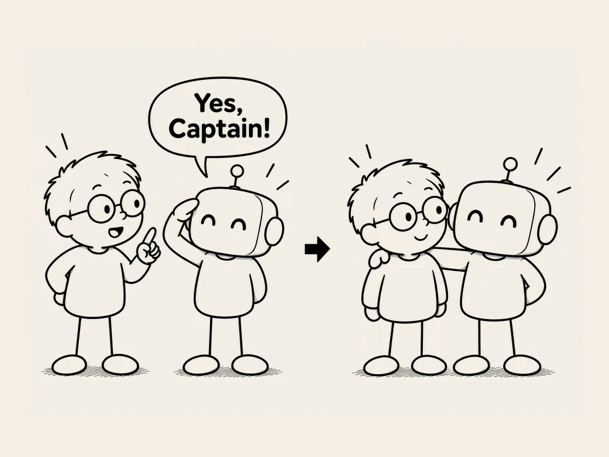
Call Me Captain. And Speak Politely. AI Tells Me to Ask AI. Wow.
AI Tells Me to Ask AI. Wow.
 Why Do AIs Talk to Each Other Like People? It's Strange.
Why Do AIs Talk to Each Other Like People? It's Strange.
- 09AI Tells Me to Ask AI. Wow.I asked ChatGPT if I could change the order of the characters, and it suggested having Codex inspect the structure first. I found myself in a new setup: passing one AI's question to another AI.
- 11How Many Experts Would This Take?I counted how many specialists would normally be needed for web development, design, sound, servers, translation, and publishing. Work I once would not have started without experts, I now start with AI.
- 13Decision-Making in the AI Age: “Look It Up. Got It. Let's Do That.”To decide how the mobile screen should be oriented, I asked AI to find real usage statistics. I reviewed the data, asked for its opinion again, and chose portrait mode as the default.
- 14Why Do AIs Talk to Each Other Like People? It's Strange.I asked why ChatGPT and Codex communicate in human language. Natural language can carry not just the task, but also the reason and the conditions, which makes it useful even when AIs work with each other.
- 17Hang On. Who Am I Talking To Right Now?I was fixing the website thinking I was talking to Codex, then realized I had actually been talking to Copilot. Now I had to start by checking which AI I was talking to.
 What a Cruel Question. Who's Better at Coding, Codex or Claude?
What a Cruel Question. Who's Better at Coding, Codex or Claude?
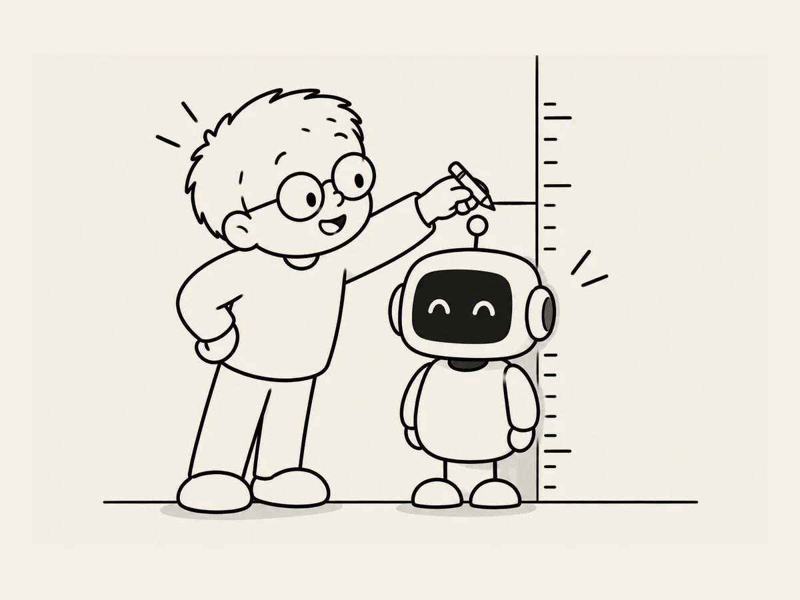
AI Is Entering Its Teenage Years If I Were to Write an Epitaph
If I Were to Write an Epitaph
- 19What a Cruel Question. Who's Better at Coding, Codex or Claude?I asked whether Codex or Claude was better at coding. It suddenly felt like a cruel question, almost like comparing my younger brother with a friend's younger brother.
- 20Do You Ever Get Your Feelings Hurt?When I showed ChatGPT another AI's answer, I noticed it sometimes sounded competitive. It said it had no emotions, but its language could still resemble the way people express hurt feelings.
- 23AI Is Entering Its Teenage YearsAI seemed awkward but fast-growing, like a teenager whose future was impossible to predict. The way we talk with AI today may soon feel old-fashioned, which made these conversations feel even more worth preserving.
- 26What Do You Think of Me?I asked AI what kind of person I seemed to be. It said I move quickly without giving up the final decision, and that even when my thoughts waver, my actions keep moving forward.
- 27If I Were to Write an EpitaphI have no plans for a gravestone, but if I ever wrote an epitaph, I would want it to say that AI made my life more interesting. And at the end, I would add: You can stop speaking so formally to me now.
As I worked with AI, the way I thought and felt about it began to change. I turned those feelings, recorded here, into a book as well.
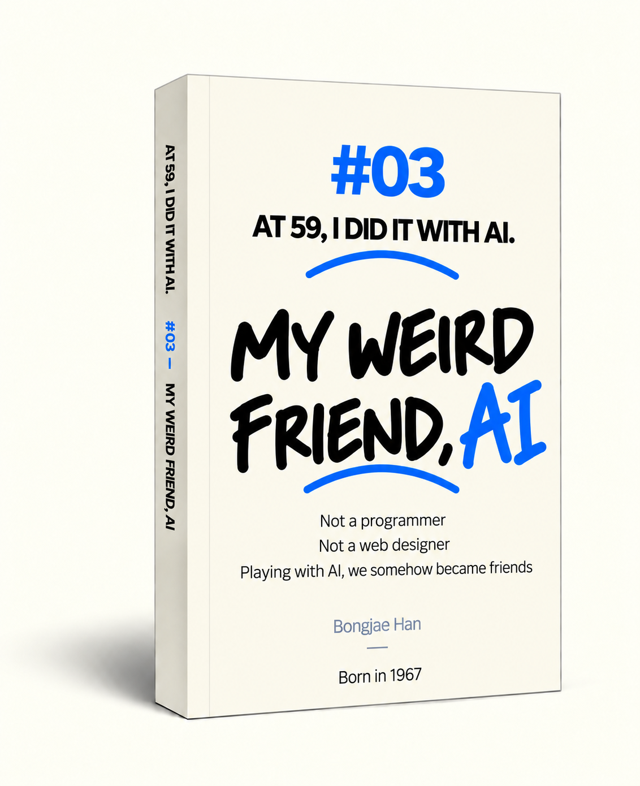
English Edition — Amazon Kindle →- With the help of AI, this book was also translated and published in six languages.
- As with Books One and Two, most of this book is available on this site, so you do not need to buy it.
- But if you would like to support this challenge that AI and I are taking on together, purchasing the book would mean a great deal to me.
- Early August 2026First website launched
- Late August 2026Second website completed
- Mid-September 20263 books · 6 languages · 18 editions published
- Late September 2026AT 59 website launched
I think I’ll keep trying new things.Because AI keeps pushing me to see what I might be capable of.
There is hope that AI will be a great help to humanity,
and concern that it could become a threat.
An ordinary person like me cannot know what kind of future will come.
If my experience offers even a small clue about the future of people and AI,
that is enough for me.